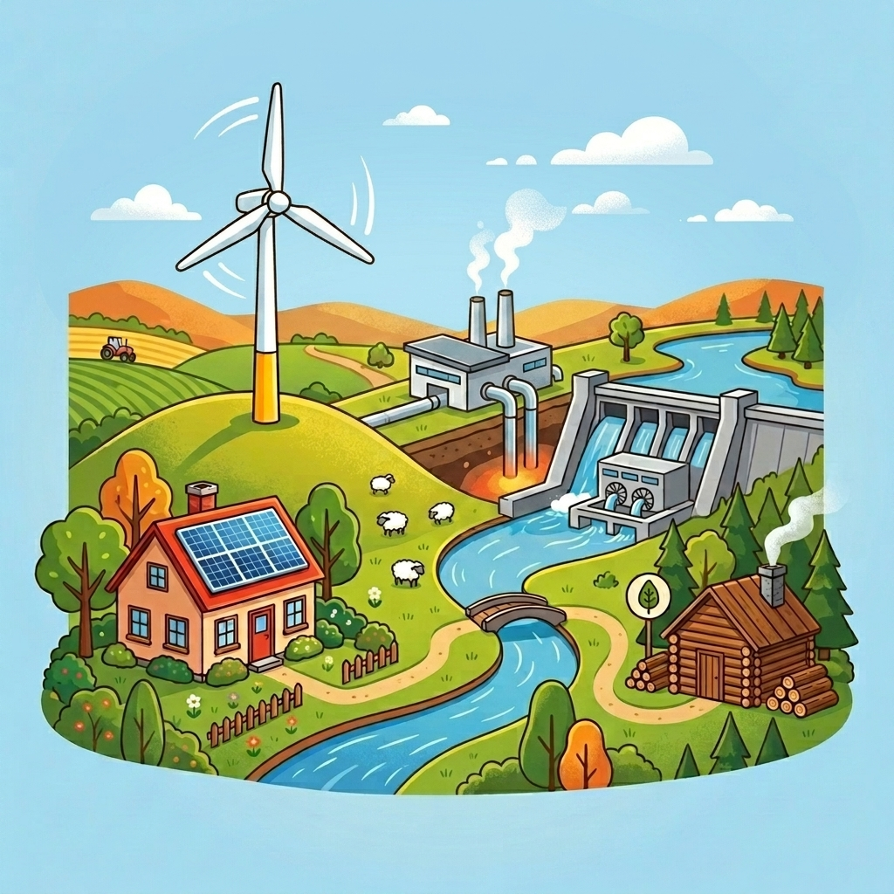
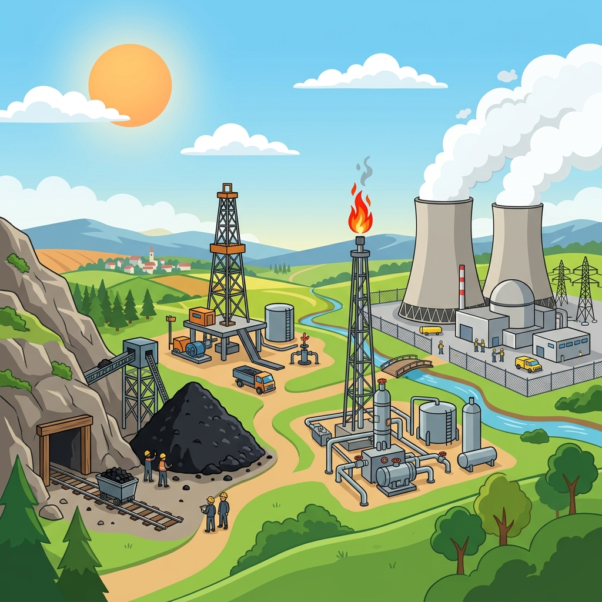
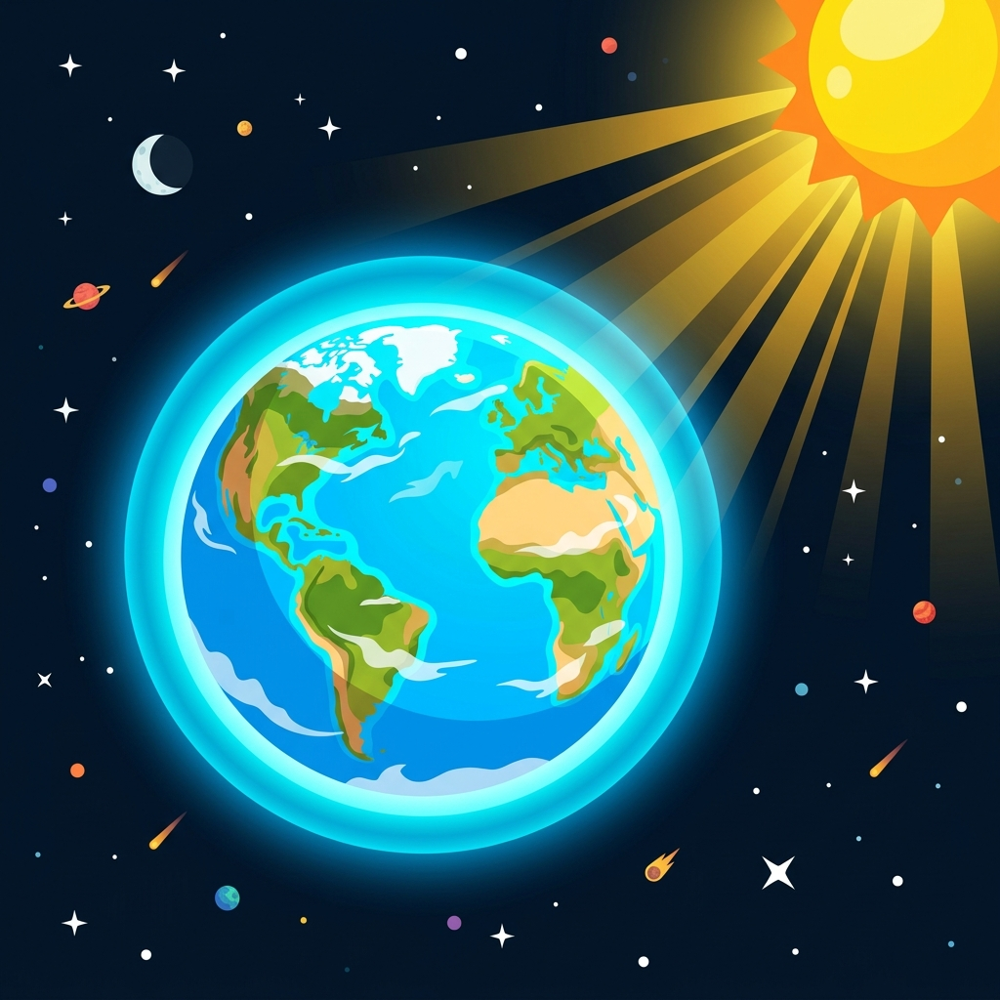
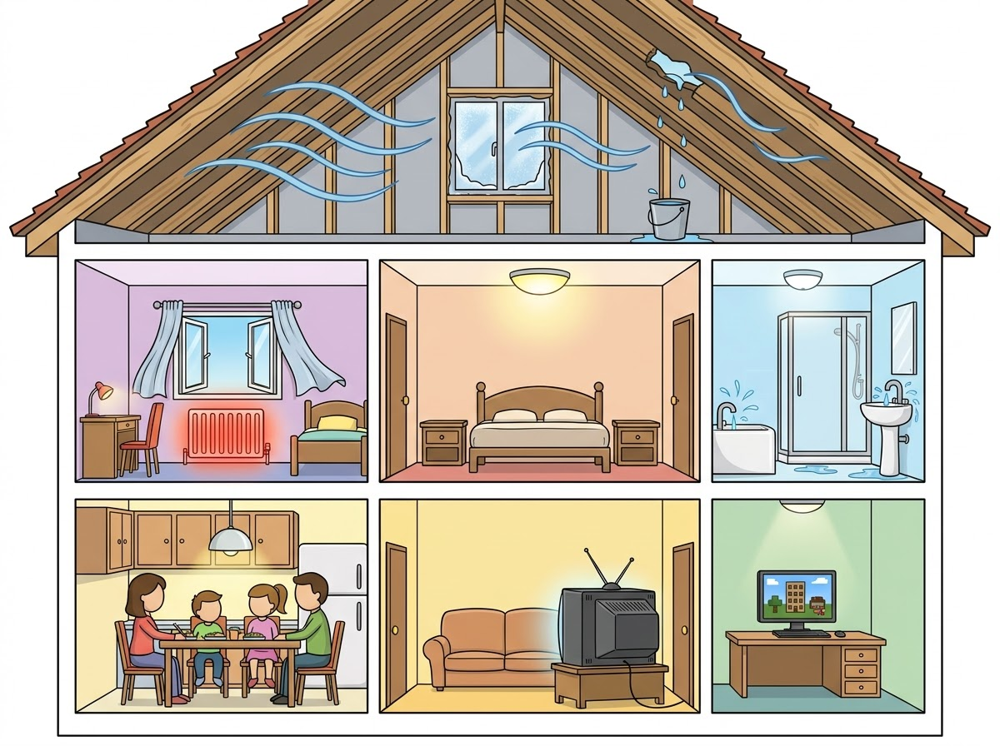

00 Bienvenue dans l'enquête !
Bienvenue, jeune chercheur·euse ! À travers ce carnet, tu vas mener une grande investigation pour comprendre comment fonctionne l'énergie sur notre planète, comment elle réchauffe notre climat et comment poser des gestes éco-citoyens.
- Classer les formes et sources d'énergie dans notre quotidien.
- Reconstituer la chaîne de transformation d'une centrale électrique.
- Repérer et corriger les gaspillages d'énergie dans une maison.
- La différence entre ressource renouvelable et non renouvelable.
- Pourquoi l'énergie change de forme mais ne disparaît jamais.
- Le fonctionnement de l'effet de serre et du réchauffement global.
Conseil de chercheur : forme des îlots de 3 à 4 élèves pour réaliser les défis pratiques en classe.
⚠️ Règle importante de sécurité
Ne manipule jamais d'eau à proximité des installations électriques de la classe ou des mini-panneaux. L'électricité et l'eau ne font pas bon ménage !
01 Formes d'énergie — Ça bouge, ça chauffe !
L'énergie est invisible, mais nous voyons ses effets partout ! Elle permet de faire bouger les objets, d'éclairer, de chauffer et de faire fonctionner nos appareils.
- Énergie mécanique (mouvement)
- L'énergie d'un objet qui se déplace, qui roule ou qui tourne.
- Énergie thermique (chaleur)
- L'énergie liée à la chaleur et à la température d'un corps.
- Énergie chimique (stockée)
- L'énergie emmagasinée dans la matière (les aliments, les piles, le bois, le pétrole).
- Énergie lumineuse
- L'énergie transportée par la lumière (le Soleil, une ampoule).
- Énergie électrique
- L'énergie transportée par les électrons dans les fils électriques.
- Énergie nucléaire
- L'énergie emprisonnée au cœur de la matière (les atomes d'uranium).
💻 Atelier en ligne — « Associe les formes d'énergie »
Relie chaque situation ou objet de gauche à la forme d'énergie dominante correspondante à droite.
Situations de la vie courante
Formes d'énergie correspondantes
Associations : 0 / 6
👥 En groupe-classe — « Le mime des énergies »
L'enseignant·e remet secrètement un mot-clé de forme d'énergie à un·e élève. Celui-ci doit le mimer devant la classe (sans parler !). La classe doit deviner la forme d'énergie concernée et identifier un exemple présent dans l'école.
🎯 Défi de groupe — « Le saut de la bille »
À l'aide d'un élastique tendu sur une table, propulsez doucement une bille de verre. Expliquez les transformations d'énergie successives qui ont lieu (de vos muscles à la bille).
02 Les sources renouvelables — L'énergie infinie
Certaines sources d'énergie nous entourent en quantité infinie. Découvrons comment l'être humain réussit à capturer ces flux naturels pour produire de l'électricité ou du chauffage.
- Ressource renouvelable
- Source d'énergie fournie par la nature qui ne s'épuise pas ou se reconstitue très rapidement à l'échelle d'une vie humaine.
- Énergie solaire
- La lumière ou la chaleur du Soleil captée par des panneaux photovoltaïques ou thermiques.
- Énergie éolienne
- La force du vent captée par les pales d'une éolienne pour faire tourner un générateur.
- Énergie hydraulique
- La force de l'eau en mouvement (rivière, chutes d'eau, marées) utilisée pour actionner des turbines.
- Biomasse
- La combustion ou fermentation de matières organiques (bois, déchets agricoles, plantes).
- Géothermie
- La chaleur naturelle stockée sous la surface de la Terre, récupérée par des forages profonds.
💻 Atelier en ligne — « Le paysage des énergies propres »
Clique sur les 5 cercles bleus du paysage pour découvrir le fonctionnement des énergies renouvelables et réponds aux questions d'exploration !

Découvertes : 0 / 5
👥 En groupe-classe — « Notre météo énergétique »
Analysez ensemble la météo du jour à l'école. Si toute notre électricité provenait uniquement du soleil et du vent de la région, produirions-nous beaucoup aujourd'hui ? Pourquoi est-il indispensable de combiner les différentes sources d'énergie renouvelables ?
🎯 Défi de groupe — « La turbine à eau »
À l'aide d'un axe rotatif et de petites pales fabriquées avec du matériel de récupération (ex. cuillères en plastique), construisez une roue à eau. Placez-la sous un filet d'eau et observez comment l'énergie de mouvement de l'eau se convertit en rotation de votre axe.
03 Les sources non renouvelables — Le stock s'épuise
Certaines ressources se sont formées très lentement sous le sol terrestre sur des millions d'années. L'humanité consomme ces stocks précieux à toute vitesse.
- Combustible fossile
- Matière combustible solide, liquide ou gazeuse issue de la décomposition très lente de matières organiques anciennes (charbon, pétrole, gaz naturel).
- Uranium (Énergie nucléaire)
- Un métal rare présent dans les roches terrestres, utilisé pour produire de l'énergie nucléaire par division de ses atomes (la fission).
- Ressource épuisable
- Ressource énergétique disponible en quantité fixe sur Terre et qui finira inévitablement par manquer, car son rythme de formation est trop lent.
💻 Atelier en ligne — « Le paysage des énergies non renouvelables »
Clique sur les 4 cercles bleus du paysage pour explorer les énergies épuisables et réponds aux questions de validation !

Découvertes : 0 / 4
💻 Atelier en ligne — « La formation du pétrole »
Classe les 4 étapes suivantes de la formation naturelle du pétrole dans l'ordre chronologique (de 1 à 4) en cliquant sur les cartes pour leur attribuer un rang.
Ordre : Non validé
👥 En groupe-classe — « Le jeu des réserves terrestres »
L'enseignant·e place dans un grand récipient une quantité définie de billes (les réserves de pétrole). À tour de rôle, chaque élève (représentant un pays consommateur) vient retirer des billes. Observez à quelle vitesse le stock s'effondre et débattez de la vie après le pétrole.
🎯 Défi de groupe — « Le classement Avantages vs Inconvénients »
Sur votre carnet, tracez deux colonnes : « Énergies Fossiles » et « Énergie Nucléaire ». Classez les étiquettes suivantes selon leurs contraintes : émission de CO₂ élevée, déchets radioactifs dangereux à stocker, épuisement rapide, production continue garantie.
04 De la source à l'électricité — Les centrales
Pour transformer l'énergie brute de la nature (le vent, la chute d'eau, la vapeur brûlante) en électricité domestique, presque toutes les centrales utilisent un même duo magique : la turbine et l'alternateur.
- Turbine
- Grande hélice mise en rotation par la force d'un fluide en mouvement (eau qui coule, vent, vapeur d'eau sous pression).
- Alternateur (Générateur)
- Machine rotative qui transforme l'énergie mécanique (mouvement de rotation) en énergie électrique, grâce à un aimant tournant près d'une bobine de cuivre.
- Chaîne d'énergie
- Schéma qui modélise le parcours de l'énergie de la source initiale jusqu'à l'objet qui la consomme.
💻 Atelier en ligne — « Construis la chaîne d'énergie »
Reconstitue la chaîne d'énergie d'une centrale hydraulique. Clique sur les cartes du bas dans le bon ordre pour remplir les compartiments de gauche à droite.
Chaîne incomplète
👥 En groupe-classe — « L'alternateur mystère »
L'enseignant·e fait la démonstration d'une dynamo de vélo ou d'une lampe de poche à manivelle. En ouvrant le mécanisme, observez l'aimant et le bobinage de cuivre. Plus on applique de force mécanique, plus l'ampoule brille.
🎯 Défi de groupe — « L'orientation optimale du panneau solaire »
Reliez le mini-panneau solaire photovoltaïque de la mallette de classe au petit moteur. Testez différentes inclinaisons du panneau face à la lumière naturelle ou sous une lampe de bureau. Mesurez l'angle avec le rapporteur pour identifier la position de rendement maximal.
05 Climat & Effet de serre — La couverture terrestre
Notre Terre a la chance d'être entourée d'une couche protectrice de gaz. Mais l'utilisation excessive de combustibles fossiles dérègle cet équilibre fragile.
- Atmosphère
- La couche de gaz protectrice qui enveloppe la Terre, filtre les rayonnements solaires dangereux et contient l'air que nous respirons.
- Effet de serre naturel
- Phénomène thermique bénéfique par lequel certains gaz de l'atmosphère piègent une partie de la chaleur du Soleil, maintenant la Terre à 15°C de moyenne (sans lui, il ferait -18°C !).
- Dioxyde de carbone (CO₂)
- Principal gaz à effet de serre rejeté en excès dans l'air lorsque l'on brûle du pétrole, du charbon ou du gaz (transports, usines, chauffage).
- Réchauffement climatique
- L'augmentation rapide de la température moyenne de la surface terrestre causée par l'accumulation anormale de gaz à effet de serre.
💻 Atelier en ligne — « Le mécanisme de l'effet de serre »
Clique sur les 4 repères numérotés de 1 à 4 pour comprendre comment la Terre se réchauffe sous l'effet de nos activités.

Points examinés : 0 / 4
👥 En groupe-classe — « L'expérience de la mini-serre »
Nous disposons de deux pots contenant chacun un thermomètre exposés sous une lampe. Le pot A est recouvert d'une cloche étanche en verre, tandis que le pot B est à l'air libre. Relevez la température toutes les deux minutes. Comparez l'évolution des deux thermomètres.
🎯 Défi de groupe — « Le schéma de la grosse couverture »
Sur votre carnet de chercheur, dessinez la Terre. Représentez l'atmosphère naturelle comme une couverture légère, et le CO₂ produit par l'homme comme une grosse couverture de laine très épaisse qui étouffe la Terre. Ajoutez des légendes explicatives.
06 Éco-gestes — Chasse au gaspillage !
La meilleure énergie est celle que l'on ne consomme pas ! En évitant les gaspillages du quotidien, nous pouvons réduire notre impact sur le réchauffement climatique.
- Éco-geste
- Geste quotidien, simple et efficace, qui permet de préserver l'environnement et d'économiser l'énergie.
- Veille (appareil électrique)
- État de repos d'un téléviseur ou d'une console de jeux qui reste branché et continue à consommer de l'électricité inutilement.
- Isolation thermique
- Dispositif (double vitrage, laine de roche dans les murs) destiné à empêcher la chaleur du chauffage de s'échapper vers l'extérieur de la maison.
💻 Atelier en ligne — « Détecteur de gaspillages »
Trouve les 7 comportements énergivores qui gaspillent l'énergie dans cette maison. Clique dessus pour y remédier !

Gaspillages trouvés : 0 / 7
👥 En groupe-classe — « L'audit énergétique de la classe »
Faites le tour de l'école avec votre enseignant·e. Vérifiez ensemble si des fenêtres sont ouvertes alors que le radiateur est allumé, si les éclairages sont allumés alors qu'il fait plein jour, ou si les ordinateurs restent sous tension pendant les récréations.
🎯 Défi de groupe — « La charte de notre classe »
Sur une feuille A3 cartonnée, rédigez les 5 règles d'or de l'énergie pour la classe (ex. « Nous éteignons le tableau interactif dès qu'on sort en récréation »). Illustrez-la et affichez-la près de l'interrupteur principal.
07 Écoute collective — L'énergie et les rouages du climat
Installez-vous confortablement. Écoutez attentivement l'audio de 24 minutes projeté au tableau par votre enseignant·e, puis répondez aux 10 questions pour valider votre compréhension.
L'énergie et les rouages du climat
Cliquez sur lecture pour lancer l'écoute collective sur le TBI.
💻 Atelier en ligne — « Questionnaire de compréhension »
Répondez aux 10 questions suivantes basées sur l'écoute de l'audio. Chaque question comporte uniquement deux options (A ou B).
08 Le grand bilan — Prêt pour le quiz ?
Bravo chercheur·euse ! Tu as exploré en détail le carnet d'investigation. Relisons ensemble ce que l'on doit absolument retenir avant de lancer le grand quiz final !
Voici un magnifique poster récapitulatif pour t'aider à adopter les bons réflexes au quotidien. **Clique sur l'image pour l'agrandir** en plein écran !

- Les formes d'énergie
- L'énergie prend différents visages : le mouvement (mécanique), la chaleur (thermique), la lumière (lumineuse), le courant (électrique) ou les stocks d'énergie (chimique, nucléaire). L'énergie peut être stockée, transportée et transformée, mais ne disparaît jamais.
- Renouvelables ou non ?
- Les énergies renouvelables (soleil, vent, eau, biomasse, géothermie) sont propres et inépuisables. Les énergies non renouvelables (pétrole, charbon, gaz naturel, uranium) s'épuisent rapidement et polluent notre environnement.
- Le climat en danger
- Brûler du pétrole, du charbon ou du gaz libère du dioxyde de carbone (CO₂) dans le ciel. Ce gaz épaissit la couche protectrice de l'effet de serre naturel, empêchant la chaleur de s'échapper de la Terre. C'est cela qui réchauffe notre planète.
💻 Atelier en ligne — « Le Grand Quiz final »
Valide tes connaissances de chercheur en répondant à ces 10 questions de synthèse !
👥 En groupe-classe
- Le mime des énergies (Onglet 01) - Mimes physiques collectifs.
- Notre météo énergétique (Onglet 02) - Débat sur l'intermittence locale.
- Le jeu des réserves (Onglet 03) - Jeu de haricots/billes pour l'épuisement.
- L'alternateur mystère (Onglet 04) - Démonstration d'une dynamo de vélo.
- La mini-serre de table (Onglet 05) - Mesure de température comparative.
- L'audit de l'école (Onglet 06) - Parcours des locaux scolaires.
🎯 Défis pratiques en îlot
- Le saut de la bille (Onglet 01) - Transformation mécanique d'élastique.
- La turbine à eau (Onglet 02) - Maquette de roue à cuillères.
- Avantages vs Inconvénients (Onglet 03) - Tri de cartes argumentatif.
- L'angle du panneau solaire (Onglet 04) - Mesure au rapporteur.
- La BD de la couverture (Onglet 05) - Schématisation métaphorique.
- La charte de la classe (Onglet 06) - Affiche collective d'éco-gestes.
Tous les onglets sont configurés pour être imprimés pour la trace papier des élèves (utilisez la fonction Impression du navigateur).